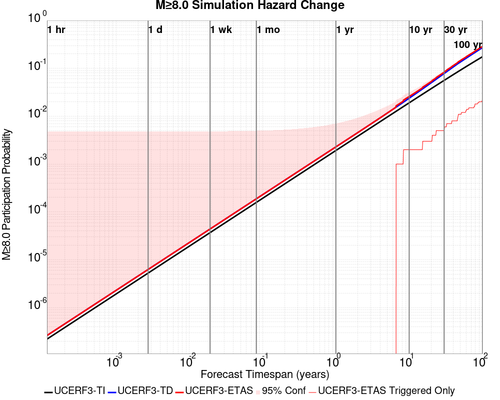
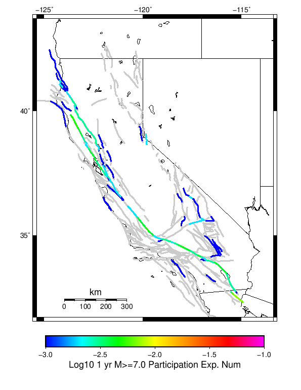
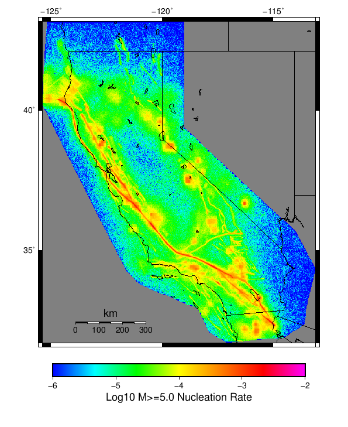

Start 2012, 500 yr, kCOV=1.16, Spontaneous, Historical Catalog Results
| Start 2012, 500 yr, kCOV=1.16, Spontaneous, Historical Catalog |
|---|
| Num Simulations | 1000 |
| Start Time | 2012/01/01 00:00:00 UTC |
| Start Time Epoch Milliseconds | 1325376000000 |
| Duration | 500 Years |
| Includes Spontaneous? | true |
| Trigger Ruptures | (none) |
| Trigger Ruptures | 60366 Trigger Ruptures |
| First: M7.3 at 1852/01/05 04:40:39 UTC |
| Last: M3.2 at 2011/12/31 19:14:44 UTC |
| Largest: M7.9 at 1857/01/09 16:25:39 UTC |
| Config Generated With | u3etas_config_builder.sh --start-year 2012 --num-simulations 1000 --duration-years 500 --include-spontaneous --historical-catalog --etas-k-cov 1.16 --random-seed 123456789 --hpc-site USC_HPC --nodes 36 --hours 24 --queue scec |
Table Of Contents
Hazard Change Over Time
(top)
These plots show how the probability of ruptures of various magnitudes within 100km of any scenario rupture changes over time
M≥5.0 Hazard Change Over Time
(top)

| Forecast Duration | UCERF3-ETAS [95% Conf] | UCERF3-ETAS Triggered Only | UCERF3-TD | UCERF3-ETAS/TD Gain | UCERF3-TI |
|---|
| 1 Hour | 9.99E-4 [9.99E-4 - 5.76E-3] | 0.000 | 9.99E-4 | 1 | 9.82E-4 |
| 1 Day | 0.027 [0.024 - 0.033] | 3.00E-3 | 0.024 | 1.12 | 0.023 |
| 1 Week | 0.177 [0.169 - 0.187] | 0.026 | 0.155 | 1.14 | 0.152 |
| 1 Month | 0.567 [0.558 - 0.578] | 0.112 | 0.513 | 1.11 | 0.507 |
| 1 Year | 1.000 [1.000 - 1.000] | 0.712 | 1.000 | 1 | 1.000 |
| 10 Years | 1.000 [1.000 - 1.000] | 1.000 | 1.000 | 1 | 1.000 |
| 30 Years | 1.000 [1.000 - 1.000] | 1.000 | 1.000 | 1 | 1.000 |
| 100 Years | 1.000 [1.000 - 1.000] | 1.000 | 1.000 | 1 | 1.000 |
M≥6.0 Hazard Change Over Time
(top)

| Forecast Duration | UCERF3-ETAS [95% Conf] | UCERF3-ETAS Triggered Only | UCERF3-TD | UCERF3-ETAS/TD Gain | UCERF3-TI |
|---|
| 1 Hour | 1.13E-4 [1.13E-4 - 4.88E-3] | 0.000 | 1.13E-4 | 1 | 9.74E-5 |
| 1 Day | 3.70E-3 [2.76E-3 - 9.16E-3] | 1.00E-3 | 2.71E-3 | 1.37 | 2.33E-3 |
| 1 Week | 0.022 [0.020 - 0.028] | 3.00E-3 | 0.019 | 1.16 | 0.016 |
| 1 Month | 0.089 [0.084 - 0.098] | 0.012 | 0.078 | 1.14 | 0.068 |
| 1 Year | 0.681 [0.673 - 0.689] | 0.141 | 0.628 | 1.08 | 0.574 |
| 10 Years | 1.000 [1.000 - 1.000] | 0.629 | 1.000 | 1 | 1.000 |
| 30 Years | 1.000 [1.000 - 1.000] | 0.869 | 1.000 | 1 | 1.000 |
| 100 Years | 1.000 [1.000 - 1.000] | 0.992 | 1.000 | 1 | 1.000 |
M≥7.0 Hazard Change Over Time
(top)

| Forecast Duration | UCERF3-ETAS [95% Conf] | UCERF3-ETAS Triggered Only | UCERF3-TD | UCERF3-ETAS/TD Gain | UCERF3-TI |
|---|
| 1 Hour | 1.12E-5 [1.12E-5 - 4.78E-3] | 0.000 | 1.12E-5 | 1 | 9.08E-6 |
| 1 Day | 2.68E-4 [2.68E-4 - 5.04E-3] | 0.000 | 2.68E-4 | 1 | 2.18E-4 |
| 1 Week | 2.87E-3 [1.92E-3 - 8.33E-3] | 1.00E-3 | 1.87E-3 | 1.53 | 1.52E-3 |
| 1 Month | 9.98E-3 [8.34E-3 - 0.016] | 2.00E-3 | 8.00E-3 | 1.25 | 6.52E-3 |
| 1 Year | 0.102 [0.098 - 0.110] | 0.010 | 0.093 | 1.1 | 0.076 |
| 10 Years | 0.659 [0.652 - 0.666] | 0.091 | 0.625 | 1.05 | 0.549 |
| 30 Years | 0.957 [0.956 - 0.958] | 0.189 | 0.947 | 1.01 | 0.908 |
| 100 Years | 1.000 [1.000 - 1.000] | 0.380 | 1.000 | 1 | 1.000 |
M≥8.0 Hazard Change Over Time
(top)

| Forecast Duration | UCERF3-ETAS [95% Conf] | UCERF3-ETAS Triggered Only | UCERF3-TD | UCERF3-ETAS/TD Gain | UCERF3-TI |
|---|
| 1 Hour | 2.61E-7 [2.61E-7 - 4.77E-3] | 0.000 | 2.61E-7 | 1 | 2.20E-7 |
| 1 Day | 6.27E-6 [6.27E-6 - 4.78E-3] | 0.000 | 6.27E-6 | 1 | 5.27E-6 |
| 1 Week | 4.39E-5 [4.39E-5 - 4.81E-3] | 0.000 | 4.39E-5 | 1 | 3.69E-5 |
| 1 Month | 1.88E-4 [1.88E-4 - 4.96E-3] | 0.000 | 1.88E-4 | 1 | 1.58E-4 |
| 1 Year | 2.29E-3 [2.29E-3 - 7.05E-3] | 0.000 | 2.29E-3 | 1 | 1.92E-3 |
| 10 Years | 0.026 [0.024 - 0.032] | 2.00E-3 | 0.024 | 1.08 | 0.019 |
| 30 Years | 0.083 [0.080 - 0.090] | 5.00E-3 | 0.078 | 1.06 | 0.056 |
| 100 Years | 0.288 [0.282 - 0.296] | 0.022 | 0.272 | 1.06 | 0.175 |
Section Participation
(top)
Section Participation Plots
(top)
| Min Mag | 1 yr Complete Catalog (including spontaneous) | 1 yr Triggered Ruptures (no spontaneous) | 500 yr Complete Catalog (including spontaneous) | 500 yr Triggered Ruptures (no spontaneous) | 500 yr Triggered Ruptures (primary aftershocks only) |
|---|
| All Supra. Seis. | | | |  |  |
| M≥6.5 |  |  | | | |
| M≥7 |  | | |  | |
| M≥7.5 |  | |  |  | |
| M≥8 | |  |  | | |
Supra-Seismogenic Parent Sections Table
(top)
First 10 of 313 with matching ruptures shown
| Parent Name | Total 500 Year Mean Count | Total 1 Day Prob | Total 1 Day 95% Conf | Total 1 Week Prob | Total 1 Week 95% Conf | Total 1 Month Prob | Total 1 Month 95% Conf | Total 1 Year Prob | Total 1 Year 95% Conf | Total 500 Year Prob | Total 500 Year 95% Conf | Triggered 500 Year Mean Count | Triggered 1 Day Prob | Triggered 1 Day 95% Conf | Triggered 1 Week Prob | Triggered 1 Week 95% Conf | Triggered 1 Month Prob | Triggered 1 Month 95% Conf | Triggered 1 Year Prob | Triggered 1 Year 95% Conf | Triggered 500 Year Prob | Triggered 500 Year 95% Conf | Triggered 500 Year Primary Mean Count |
|---|
| San Andreas (Parkfield) | 21.293 | 0.000 (0.00%) | [0.00% 0.48%] | 1.00E-3 (0.10%) | [0.01% 0.65%] | 2.00E-3 (0.20%) | [0.03% 0.80%] | 0.010 (1.00%) | [0.51% 1.90%] | 1.000 (100.00%) | [99.52% 100.00%] | 1.942 | 0.000 (0.00%) | [0.00% 0.48%] | 0.000 (0.00%) | [0.00% 0.48%] | 0.000 (0.00%) | [0.00% 0.48%] | 3.00E-3 (0.30%) | [0.08% 0.95%] | 0.702 (70.20%) | [67.24% 73.00%] | 0.82 |
| San Andreas (Creeping Section) 2011 CFM | 14.264 | 0.000 (0.00%) | [0.00% 0.48%] | 0.000 (0.00%) | [0.00% 0.48%] | 2.00E-3 (0.20%) | [0.03% 0.80%] | 0.040 (4.00%) | [2.91% 5.46%] | 1.000 (100.00%) | [99.52% 100.00%] | 0.525 | 0.000 (0.00%) | [0.00% 0.48%] | 0.000 (0.00%) | [0.00% 0.48%] | 1.00E-3 (0.10%) | [0.01% 0.65%] | 5.00E-3 (0.50%) | [0.18% 1.23%] | 0.357 (35.70%) | [32.74% 38.77%] | 0.205 |
| San Andreas (Mojave S) | 9.424 | 1.00E-3 (0.10%) | [0.01% 0.65%] | 1.00E-3 (0.10%) | [0.01% 0.65%] | 2.00E-3 (0.20%) | [0.03% 0.80%] | 0.025 (2.50%) | [1.66% 3.72%] | 1.000 (100.00%) | [99.52% 100.00%] | 0.917 | 1.00E-3 (0.10%) | [0.01% 0.65%] | 1.00E-3 (0.10%) | [0.01% 0.65%] | 2.00E-3 (0.20%) | [0.03% 0.80%] | 7.00E-3 (0.70%) | [0.31% 1.50%] | 0.384 (38.40%) | [35.39% 41.50%] | 0.345 |
| Mendocino | 9.162 | 1.00E-3 (0.10%) | [0.01% 0.65%] | 1.00E-3 (0.10%) | [0.01% 0.65%] | 3.00E-3 (0.30%) | [0.08% 0.95%] | 0.025 (2.50%) | [1.66% 3.72%] | 1.000 (100.00%) | [99.52% 100.00%] | 0.487 | 0.000 (0.00%) | [0.00% 0.48%] | 0.000 (0.00%) | [0.00% 0.48%] | 0.000 (0.00%) | [0.00% 0.48%] | 7.00E-3 (0.70%) | [0.31% 1.50%] | 0.335 (33.50%) | [30.59% 36.53%] | 0.237 |
| Cerro Prieto | 6.787 | 0.000 (0.00%) | [0.00% 0.48%] | 0.000 (0.00%) | [0.00% 0.48%] | 0.000 (0.00%) | [0.00% 0.48%] | 0.024 (2.40%) | [1.58% 3.61%] | 1.000 (100.00%) | [99.52% 100.00%] | 0.336 | 0.000 (0.00%) | [0.00% 0.48%] | 0.000 (0.00%) | [0.00% 0.48%] | 0.000 (0.00%) | [0.00% 0.48%] | 0.011 (1.10%) | [0.58% 2.02%] | 0.221 (22.10%) | [19.59% 24.83%] | 0.135 |
| Imperial | 5.867 | 0.000 (0.00%) | [0.00% 0.48%] | 0.000 (0.00%) | [0.00% 0.48%] | 2.00E-3 (0.20%) | [0.03% 0.80%] | 0.015 (1.50%) | [0.87% 2.52%] | 1.000 (100.00%) | [99.52% 100.00%] | 0.355 | 0.000 (0.00%) | [0.00% 0.48%] | 0.000 (0.00%) | [0.00% 0.48%] | 1.00E-3 (0.10%) | [0.01% 0.65%] | 2.00E-3 (0.20%) | [0.03% 0.80%] | 0.264 (26.40%) | [23.71% 29.27%] | 0.172 |
| Brawley (Seismic Zone) alt 1 | 5.466 | 0.000 (0.00%) | [0.00% 0.48%] | 0.000 (0.00%) | [0.00% 0.48%] | 1.00E-3 (0.10%) | [0.01% 0.65%] | 0.018 (1.80%) | [1.10% 2.89%] | 1.000 (100.00%) | [99.52% 100.00%] | 0.265 | 0.000 (0.00%) | [0.00% 0.48%] | 0.000 (0.00%) | [0.00% 0.48%] | 0.000 (0.00%) | [0.00% 0.48%] | 2.00E-3 (0.20%) | [0.03% 0.80%] | 0.212 (21.20%) | [18.73% 23.89%] | 0.123 |
| Hayward (So) 2011 CFM | 4.78 | 1.00E-3 (0.10%) | [0.01% 0.65%] | 1.00E-3 (0.10%) | [0.01% 0.65%] | 1.00E-3 (0.10%) | [0.01% 0.65%] | 0.010 (1.00%) | [0.51% 1.90%] | 1.000 (100.00%) | [99.52% 100.00%] | 0.329 | 0.000 (0.00%) | [0.00% 0.48%] | 0.000 (0.00%) | [0.00% 0.48%] | 0.000 (0.00%) | [0.00% 0.48%] | 3.00E-3 (0.30%) | [0.08% 0.95%] | 0.221 (22.10%) | [19.59% 24.83%] | 0.146 |
| San Andreas (Offshore) 2011 CFM | 4.215 | 0.000 (0.00%) | [0.00% 0.48%] | 0.000 (0.00%) | [0.00% 0.48%] | 0.000 (0.00%) | [0.00% 0.48%] | 3.00E-3 (0.30%) | [0.08% 0.95%] | 0.998 (99.80%) | [99.20% 99.97%] | 0.425 | 0.000 (0.00%) | [0.00% 0.48%] | 0.000 (0.00%) | [0.00% 0.48%] | 0.000 (0.00%) | [0.00% 0.48%] | 0.000 (0.00%) | [0.00% 0.48%] | 0.278 (27.80%) | [25.06% 30.71%] | 0.189 |
| Elsinore (Glen Ivy) rev | 3.932 | 0.000 (0.00%) | [0.00% 0.48%] | 1.00E-3 (0.10%) | [0.01% 0.65%] | 1.00E-3 (0.10%) | [0.01% 0.65%] | 0.015 (1.50%) | [0.87% 2.52%] | 0.990 (99.00%) | [98.10% 99.49%] | 0.121 | 0.000 (0.00%) | [0.00% 0.48%] | 0.000 (0.00%) | [0.00% 0.48%] | 0.000 (0.00%) | [0.00% 0.48%] | 4.00E-3 (0.40%) | [0.13% 1.10%] | 0.079 (7.90%) | [6.34% 9.79%] | 0.047 |
M≥6.5 Parent Sections Table
(top)
First 10 of 306 with matching ruptures shown
| Parent Name | Total 500 Year Mean Count | Total 1 Day Prob | Total 1 Day 95% Conf | Total 1 Week Prob | Total 1 Week 95% Conf | Total 1 Month Prob | Total 1 Month 95% Conf | Total 1 Year Prob | Total 1 Year 95% Conf | Total 500 Year Prob | Total 500 Year 95% Conf | Triggered 500 Year Mean Count | Triggered 1 Day Prob | Triggered 1 Day 95% Conf | Triggered 1 Week Prob | Triggered 1 Week 95% Conf | Triggered 1 Month Prob | Triggered 1 Month 95% Conf | Triggered 1 Year Prob | Triggered 1 Year 95% Conf | Triggered 500 Year Prob | Triggered 500 Year 95% Conf | Triggered 500 Year Primary Mean Count |
|---|
| Cerro Prieto | 5.822 | 0.000 (0.00%) | [0.00% 0.48%] | 0.000 (0.00%) | [0.00% 0.48%] | 0.000 (0.00%) | [0.00% 0.48%] | 0.021 (2.10%) | [1.34% 3.25%] | 1.000 (100.00%) | [99.52% 100.00%] | 0.289 | 0.000 (0.00%) | [0.00% 0.48%] | 0.000 (0.00%) | [0.00% 0.48%] | 0.000 (0.00%) | [0.00% 0.48%] | 9.00E-3 (0.90%) | [0.44% 1.77%] | 0.196 (19.60%) | [17.21% 22.23%] | 0.113 |
| San Andreas (Creeping Section) 2011 CFM | 5.457 | 0.000 (0.00%) | [0.00% 0.48%] | 0.000 (0.00%) | [0.00% 0.48%] | 1.00E-3 (0.10%) | [0.01% 0.65%] | 0.012 (1.20%) | [0.65% 2.15%] | 0.999 (99.90%) | [99.35% 99.99%] | 0.235 | 0.000 (0.00%) | [0.00% 0.48%] | 0.000 (0.00%) | [0.00% 0.48%] | 1.00E-3 (0.10%) | [0.01% 0.65%] | 2.00E-3 (0.20%) | [0.03% 0.80%] | 0.197 (19.70%) | [17.31% 22.33%] | 0.1 |
| Mendocino | 4.537 | 0.000 (0.00%) | [0.00% 0.48%] | 0.000 (0.00%) | [0.00% 0.48%] | 1.00E-3 (0.10%) | [0.01% 0.65%] | 0.013 (1.30%) | [0.72% 2.27%] | 1.000 (100.00%) | [99.52% 100.00%] | 0.323 | 0.000 (0.00%) | [0.00% 0.48%] | 0.000 (0.00%) | [0.00% 0.48%] | 0.000 (0.00%) | [0.00% 0.48%] | 3.00E-3 (0.30%) | [0.08% 0.95%] | 0.250 (25.00%) | [22.37% 27.83%] | 0.153 |
| Imperial | 4.059 | 0.000 (0.00%) | [0.00% 0.48%] | 0.000 (0.00%) | [0.00% 0.48%] | 0.000 (0.00%) | [0.00% 0.48%] | 8.00E-3 (0.80%) | [0.37% 1.64%] | 1.000 (100.00%) | [99.52% 100.00%] | 0.206 | 0.000 (0.00%) | [0.00% 0.48%] | 0.000 (0.00%) | [0.00% 0.48%] | 0.000 (0.00%) | [0.00% 0.48%] | 1.00E-3 (0.10%) | [0.01% 0.65%] | 0.168 (16.80%) | [14.56% 19.30%] | 0.094 |
| Hayward (So) 2011 CFM | 4.046 | 1.00E-3 (0.10%) | [0.01% 0.65%] | 1.00E-3 (0.10%) | [0.01% 0.65%] | 1.00E-3 (0.10%) | [0.01% 0.65%] | 8.00E-3 (0.80%) | [0.37% 1.64%] | 0.999 (99.90%) | [99.35% 99.99%] | 0.258 | 0.000 (0.00%) | [0.00% 0.48%] | 0.000 (0.00%) | [0.00% 0.48%] | 0.000 (0.00%) | [0.00% 0.48%] | 2.00E-3 (0.20%) | [0.03% 0.80%] | 0.192 (19.20%) | [16.83% 21.81%] | 0.115 |
| Brawley (Seismic Zone) alt 1 | 3.892 | 0.000 (0.00%) | [0.00% 0.48%] | 0.000 (0.00%) | [0.00% 0.48%] | 0.000 (0.00%) | [0.00% 0.48%] | 7.00E-3 (0.70%) | [0.31% 1.50%] | 0.999 (99.90%) | [99.35% 99.99%] | 0.186 | 0.000 (0.00%) | [0.00% 0.48%] | 0.000 (0.00%) | [0.00% 0.48%] | 0.000 (0.00%) | [0.00% 0.48%] | 1.00E-3 (0.10%) | [0.01% 0.65%] | 0.153 (15.30%) | [13.16% 17.72%] | 0.085 |
| San Andreas (Mojave S) | 3.547 | 0.000 (0.00%) | [0.00% 0.48%] | 0.000 (0.00%) | [0.00% 0.48%] | 0.000 (0.00%) | [0.00% 0.48%] | 8.00E-3 (0.80%) | [0.37% 1.64%] | 0.999 (99.90%) | [99.35% 99.99%] | 0.266 | 0.000 (0.00%) | [0.00% 0.48%] | 0.000 (0.00%) | [0.00% 0.48%] | 0.000 (0.00%) | [0.00% 0.48%] | 1.00E-3 (0.10%) | [0.01% 0.65%] | 0.195 (19.50%) | [17.12% 22.12%] | 0.121 |
| San Andreas (Santa Cruz Mts) 2011 CFM | 3.432 | 0.000 (0.00%) | [0.00% 0.48%] | 0.000 (0.00%) | [0.00% 0.48%] | 0.000 (0.00%) | [0.00% 0.48%] | 1.00E-3 (0.10%) | [0.01% 0.65%] | 0.998 (99.80%) | [99.20% 99.97%] | 0.215 | 0.000 (0.00%) | [0.00% 0.48%] | 0.000 (0.00%) | [0.00% 0.48%] | 0.000 (0.00%) | [0.00% 0.48%] | 0.000 (0.00%) | [0.00% 0.48%] | 0.180 (18.00%) | [15.70% 20.55%] | 0.097 |
| San Andreas (San Bernardino N) | 3.338 | 0.000 (0.00%) | [0.00% 0.48%] | 0.000 (0.00%) | [0.00% 0.48%] | 0.000 (0.00%) | [0.00% 0.48%] | 6.00E-3 (0.60%) | [0.24% 1.37%] | 0.997 (99.70%) | [99.05% 99.92%] | 0.189 | 0.000 (0.00%) | [0.00% 0.48%] | 0.000 (0.00%) | [0.00% 0.48%] | 0.000 (0.00%) | [0.00% 0.48%] | 1.00E-3 (0.10%) | [0.01% 0.65%] | 0.154 (15.40%) | [13.25% 17.82%] | 0.068 |
| San Andreas (Offshore) 2011 CFM | 3.063 | 0.000 (0.00%) | [0.00% 0.48%] | 0.000 (0.00%) | [0.00% 0.48%] | 0.000 (0.00%) | [0.00% 0.48%] | 3.00E-3 (0.30%) | [0.08% 0.95%] | 0.997 (99.70%) | [99.05% 99.92%] | 0.3 | 0.000 (0.00%) | [0.00% 0.48%] | 0.000 (0.00%) | [0.00% 0.48%] | 0.000 (0.00%) | [0.00% 0.48%] | 0.000 (0.00%) | [0.00% 0.48%] | 0.227 (22.70%) | [20.16% 25.45%] | 0.132 |
M≥7 Parent Sections Table
(top)
First 10 of 273 with matching ruptures shown
| Parent Name | Total 500 Year Mean Count | Total 1 Day Prob | Total 1 Day 95% Conf | Total 1 Week Prob | Total 1 Week 95% Conf | Total 1 Month Prob | Total 1 Month 95% Conf | Total 1 Year Prob | Total 1 Year 95% Conf | Total 500 Year Prob | Total 500 Year 95% Conf | Triggered 500 Year Mean Count | Triggered 1 Day Prob | Triggered 1 Day 95% Conf | Triggered 1 Week Prob | Triggered 1 Week 95% Conf | Triggered 1 Month Prob | Triggered 1 Month 95% Conf | Triggered 1 Year Prob | Triggered 1 Year 95% Conf | Triggered 500 Year Prob | Triggered 500 Year 95% Conf | Triggered 500 Year Primary Mean Count |
|---|
| San Andreas (Creeping Section) 2011 CFM | 3.442 | 0.000 (0.00%) | [0.00% 0.48%] | 0.000 (0.00%) | [0.00% 0.48%] | 0.000 (0.00%) | [0.00% 0.48%] | 3.00E-3 (0.30%) | [0.08% 0.95%] | 0.989 (98.90%) | [97.98% 99.42%] | 0.178 | 0.000 (0.00%) | [0.00% 0.48%] | 0.000 (0.00%) | [0.00% 0.48%] | 0.000 (0.00%) | [0.00% 0.48%] | 0.000 (0.00%) | [0.00% 0.48%] | 0.155 (15.50%) | [13.34% 17.93%] | 0.075 |
| San Andreas (Carrizo) rev | 2.87 | 0.000 (0.00%) | [0.00% 0.48%] | 1.00E-3 (0.10%) | [0.01% 0.65%] | 1.00E-3 (0.10%) | [0.01% 0.65%] | 5.00E-3 (0.50%) | [0.18% 1.23%] | 1.000 (100.00%) | [99.52% 100.00%] | 0.232 | 0.000 (0.00%) | [0.00% 0.48%] | 1.00E-3 (0.10%) | [0.01% 0.65%] | 1.00E-3 (0.10%) | [0.01% 0.65%] | 1.00E-3 (0.10%) | [0.01% 0.65%] | 0.185 (18.50%) | [16.17% 21.08%] | 0.107 |
| San Andreas (Cholame) rev | 2.861 | 0.000 (0.00%) | [0.00% 0.48%] | 1.00E-3 (0.10%) | [0.01% 0.65%] | 1.00E-3 (0.10%) | [0.01% 0.65%] | 4.00E-3 (0.40%) | [0.13% 1.10%] | 0.999 (99.90%) | [99.35% 99.99%] | 0.231 | 0.000 (0.00%) | [0.00% 0.48%] | 1.00E-3 (0.10%) | [0.01% 0.65%] | 1.00E-3 (0.10%) | [0.01% 0.65%] | 1.00E-3 (0.10%) | [0.01% 0.65%] | 0.184 (18.40%) | [16.07% 20.97%] | 0.101 |
| San Andreas (Santa Cruz Mts) 2011 CFM | 2.687 | 0.000 (0.00%) | [0.00% 0.48%] | 0.000 (0.00%) | [0.00% 0.48%] | 0.000 (0.00%) | [0.00% 0.48%] | 1.00E-3 (0.10%) | [0.01% 0.65%] | 0.991 (99.10%) | [98.23% 99.56%] | 0.146 | 0.000 (0.00%) | [0.00% 0.48%] | 0.000 (0.00%) | [0.00% 0.48%] | 0.000 (0.00%) | [0.00% 0.48%] | 0.000 (0.00%) | [0.00% 0.48%] | 0.125 (12.50%) | [10.55% 14.75%] | 0.059 |
| San Andreas (Mojave S) | 2.653 | 0.000 (0.00%) | [0.00% 0.48%] | 0.000 (0.00%) | [0.00% 0.48%] | 0.000 (0.00%) | [0.00% 0.48%] | 5.00E-3 (0.50%) | [0.18% 1.23%] | 0.998 (99.80%) | [99.20% 99.97%] | 0.182 | 0.000 (0.00%) | [0.00% 0.48%] | 0.000 (0.00%) | [0.00% 0.48%] | 0.000 (0.00%) | [0.00% 0.48%] | 0.000 (0.00%) | [0.00% 0.48%] | 0.154 (15.40%) | [13.25% 17.82%] | 0.087 |
| San Andreas (Mojave N) | 2.476 | 0.000 (0.00%) | [0.00% 0.48%] | 0.000 (0.00%) | [0.00% 0.48%] | 0.000 (0.00%) | [0.00% 0.48%] | 3.00E-3 (0.30%) | [0.08% 0.95%] | 1.000 (100.00%) | [99.52% 100.00%] | 0.18 | 0.000 (0.00%) | [0.00% 0.48%] | 0.000 (0.00%) | [0.00% 0.48%] | 0.000 (0.00%) | [0.00% 0.48%] | 0.000 (0.00%) | [0.00% 0.48%] | 0.148 (14.80%) | [12.69% 17.19%] | 0.086 |
| San Andreas (Big Bend) | 2.331 | 0.000 (0.00%) | [0.00% 0.48%] | 0.000 (0.00%) | [0.00% 0.48%] | 0.000 (0.00%) | [0.00% 0.48%] | 3.00E-3 (0.30%) | [0.08% 0.95%] | 0.999 (99.90%) | [99.35% 99.99%] | 0.176 | 0.000 (0.00%) | [0.00% 0.48%] | 0.000 (0.00%) | [0.00% 0.48%] | 0.000 (0.00%) | [0.00% 0.48%] | 0.000 (0.00%) | [0.00% 0.48%] | 0.147 (14.70%) | [12.59% 17.08%] | 0.084 |
| San Andreas (North Coast) 2011 CFM | 2.308 | 0.000 (0.00%) | [0.00% 0.48%] | 0.000 (0.00%) | [0.00% 0.48%] | 0.000 (0.00%) | [0.00% 0.48%] | 0.000 (0.00%) | [0.00% 0.48%] | 0.996 (99.60%) | [98.90% 99.87%] | 0.175 | 0.000 (0.00%) | [0.00% 0.48%] | 0.000 (0.00%) | [0.00% 0.48%] | 0.000 (0.00%) | [0.00% 0.48%] | 0.000 (0.00%) | [0.00% 0.48%] | 0.142 (14.20%) | [12.13% 16.55%] | 0.084 |
| San Andreas (San Bernardino N) | 2.278 | 0.000 (0.00%) | [0.00% 0.48%] | 0.000 (0.00%) | [0.00% 0.48%] | 0.000 (0.00%) | [0.00% 0.48%] | 3.00E-3 (0.30%) | [0.08% 0.95%] | 0.978 (97.80%) | [96.63% 98.58%] | 0.144 | 0.000 (0.00%) | [0.00% 0.48%] | 0.000 (0.00%) | [0.00% 0.48%] | 0.000 (0.00%) | [0.00% 0.48%] | 0.000 (0.00%) | [0.00% 0.48%] | 0.123 (12.30%) | [10.36% 14.53%] | 0.058 |
| San Andreas (Parkfield) | 2.175 | 0.000 (0.00%) | [0.00% 0.48%] | 0.000 (0.00%) | [0.00% 0.48%] | 0.000 (0.00%) | [0.00% 0.48%] | 2.00E-3 (0.20%) | [0.03% 0.80%] | 0.963 (96.30%) | [94.88% 97.35%] | 0.163 | 0.000 (0.00%) | [0.00% 0.48%] | 0.000 (0.00%) | [0.00% 0.48%] | 0.000 (0.00%) | [0.00% 0.48%] | 0.000 (0.00%) | [0.00% 0.48%] | 0.137 (13.70%) | [11.66% 16.02%] | 0.07 |
M≥7.5 Parent Sections Table
(top)
First 10 of 207 with matching ruptures shown
| Parent Name | Total 500 Year Mean Count | Total 1 Day Prob | Total 1 Day 95% Conf | Total 1 Week Prob | Total 1 Week 95% Conf | Total 1 Month Prob | Total 1 Month 95% Conf | Total 1 Year Prob | Total 1 Year 95% Conf | Total 500 Year Prob | Total 500 Year 95% Conf | Triggered 500 Year Mean Count | Triggered 1 Day Prob | Triggered 1 Day 95% Conf | Triggered 1 Week Prob | Triggered 1 Week 95% Conf | Triggered 1 Month Prob | Triggered 1 Month 95% Conf | Triggered 1 Year Prob | Triggered 1 Year 95% Conf | Triggered 500 Year Prob | Triggered 500 Year 95% Conf | Triggered 500 Year Primary Mean Count |
|---|
| San Andreas (Mojave N) | 2.433 | 0.000 (0.00%) | [0.00% 0.48%] | 0.000 (0.00%) | [0.00% 0.48%] | 0.000 (0.00%) | [0.00% 0.48%] | 2.00E-3 (0.20%) | [0.03% 0.80%] | 0.999 (99.90%) | [99.35% 99.99%] | 0.175 | 0.000 (0.00%) | [0.00% 0.48%] | 0.000 (0.00%) | [0.00% 0.48%] | 0.000 (0.00%) | [0.00% 0.48%] | 0.000 (0.00%) | [0.00% 0.48%] | 0.146 (14.60%) | [12.50% 16.98%] | 0.084 |
| San Andreas (Big Bend) | 2.264 | 0.000 (0.00%) | [0.00% 0.48%] | 0.000 (0.00%) | [0.00% 0.48%] | 0.000 (0.00%) | [0.00% 0.48%] | 2.00E-3 (0.20%) | [0.03% 0.80%] | 0.998 (99.80%) | [99.20% 99.97%] | 0.169 | 0.000 (0.00%) | [0.00% 0.48%] | 0.000 (0.00%) | [0.00% 0.48%] | 0.000 (0.00%) | [0.00% 0.48%] | 0.000 (0.00%) | [0.00% 0.48%] | 0.144 (14.40%) | [12.31% 16.77%] | 0.08 |
| San Andreas (Mojave S) | 2.184 | 0.000 (0.00%) | [0.00% 0.48%] | 0.000 (0.00%) | [0.00% 0.48%] | 0.000 (0.00%) | [0.00% 0.48%] | 3.00E-3 (0.30%) | [0.08% 0.95%] | 0.997 (99.70%) | [99.05% 99.92%] | 0.15 | 0.000 (0.00%) | [0.00% 0.48%] | 0.000 (0.00%) | [0.00% 0.48%] | 0.000 (0.00%) | [0.00% 0.48%] | 0.000 (0.00%) | [0.00% 0.48%] | 0.129 (12.90%) | [10.92% 15.17%] | 0.074 |
| San Andreas (Carrizo) rev | 2.123 | 0.000 (0.00%) | [0.00% 0.48%] | 0.000 (0.00%) | [0.00% 0.48%] | 0.000 (0.00%) | [0.00% 0.48%] | 2.00E-3 (0.20%) | [0.03% 0.80%] | 0.994 (99.40%) | [98.63% 99.76%] | 0.161 | 0.000 (0.00%) | [0.00% 0.48%] | 0.000 (0.00%) | [0.00% 0.48%] | 0.000 (0.00%) | [0.00% 0.48%] | 0.000 (0.00%) | [0.00% 0.48%] | 0.140 (14.00%) | [11.94% 16.34%] | 0.079 |
| San Andreas (Cholame) rev | 2.032 | 0.000 (0.00%) | [0.00% 0.48%] | 0.000 (0.00%) | [0.00% 0.48%] | 0.000 (0.00%) | [0.00% 0.48%] | 2.00E-3 (0.20%) | [0.03% 0.80%] | 0.981 (98.10%) | [96.99% 98.82%] | 0.152 | 0.000 (0.00%) | [0.00% 0.48%] | 0.000 (0.00%) | [0.00% 0.48%] | 0.000 (0.00%) | [0.00% 0.48%] | 0.000 (0.00%) | [0.00% 0.48%] | 0.133 (13.30%) | [11.29% 15.60%] | 0.073 |
| San Andreas (North Coast) 2011 CFM | 1.815 | 0.000 (0.00%) | [0.00% 0.48%] | 0.000 (0.00%) | [0.00% 0.48%] | 0.000 (0.00%) | [0.00% 0.48%] | 0.000 (0.00%) | [0.00% 0.48%] | 0.984 (98.40%) | [97.36% 99.05%] | 0.117 | 0.000 (0.00%) | [0.00% 0.48%] | 0.000 (0.00%) | [0.00% 0.48%] | 0.000 (0.00%) | [0.00% 0.48%] | 0.000 (0.00%) | [0.00% 0.48%] | 0.103 (10.30%) | [8.52% 12.39%] | 0.058 |
| San Andreas (San Bernardino N) | 1.765 | 0.000 (0.00%) | [0.00% 0.48%] | 0.000 (0.00%) | [0.00% 0.48%] | 0.000 (0.00%) | [0.00% 0.48%] | 2.00E-3 (0.20%) | [0.03% 0.80%] | 0.937 (93.70%) | [91.97% 95.09%] | 0.115 | 0.000 (0.00%) | [0.00% 0.48%] | 0.000 (0.00%) | [0.00% 0.48%] | 0.000 (0.00%) | [0.00% 0.48%] | 0.000 (0.00%) | [0.00% 0.48%] | 0.102 (10.20%) | [8.43% 12.28%] | 0.052 |
| San Andreas (Creeping Section) 2011 CFM | 1.728 | 0.000 (0.00%) | [0.00% 0.48%] | 0.000 (0.00%) | [0.00% 0.48%] | 0.000 (0.00%) | [0.00% 0.48%] | 2.00E-3 (0.20%) | [0.03% 0.80%] | 0.885 (88.50%) | [86.32% 90.38%] | 0.096 | 0.000 (0.00%) | [0.00% 0.48%] | 0.000 (0.00%) | [0.00% 0.48%] | 0.000 (0.00%) | [0.00% 0.48%] | 0.000 (0.00%) | [0.00% 0.48%] | 0.088 (8.80%) | [7.15% 10.77%] | 0.04 |
| San Andreas (Parkfield) | 1.544 | 0.000 (0.00%) | [0.00% 0.48%] | 0.000 (0.00%) | [0.00% 0.48%] | 0.000 (0.00%) | [0.00% 0.48%] | 2.00E-3 (0.20%) | [0.03% 0.80%] | 0.888 (88.80%) | [86.64% 90.65%] | 0.112 | 0.000 (0.00%) | [0.00% 0.48%] | 0.000 (0.00%) | [0.00% 0.48%] | 0.000 (0.00%) | [0.00% 0.48%] | 0.000 (0.00%) | [0.00% 0.48%] | 0.100 (10.00%) | [8.25% 12.07%] | 0.052 |
| San Andreas (Peninsula) 2011 CFM | 1.52 | 0.000 (0.00%) | [0.00% 0.48%] | 0.000 (0.00%) | [0.00% 0.48%] | 0.000 (0.00%) | [0.00% 0.48%] | 0.000 (0.00%) | [0.00% 0.48%] | 0.927 (92.70%) | [90.86% 94.20%] | 0.092 | 0.000 (0.00%) | [0.00% 0.48%] | 0.000 (0.00%) | [0.00% 0.48%] | 0.000 (0.00%) | [0.00% 0.48%] | 0.000 (0.00%) | [0.00% 0.48%] | 0.084 (8.40%) | [6.79% 10.34%] | 0.043 |
M≥8 Parent Sections Table
(top)
First 10 of 61 with matching ruptures shown
| Parent Name | Total 500 Year Mean Count | Total 1 Day Prob | Total 1 Day 95% Conf | Total 1 Week Prob | Total 1 Week 95% Conf | Total 1 Month Prob | Total 1 Month 95% Conf | Total 1 Year Prob | Total 1 Year 95% Conf | Total 500 Year Prob | Total 500 Year 95% Conf | Triggered 500 Year Mean Count | Triggered 1 Day Prob | Triggered 1 Day 95% Conf | Triggered 1 Week Prob | Triggered 1 Week 95% Conf | Triggered 1 Month Prob | Triggered 1 Month 95% Conf | Triggered 1 Year Prob | Triggered 1 Year 95% Conf | Triggered 500 Year Prob | Triggered 500 Year 95% Conf | Triggered 500 Year Primary Mean Count |
|---|
| San Andreas (Mojave N) | 0.75 | 0.000 (0.00%) | [0.00% 0.48%] | 0.000 (0.00%) | [0.00% 0.48%] | 0.000 (0.00%) | [0.00% 0.48%] | 0.000 (0.00%) | [0.00% 0.48%] | 0.588 (58.80%) | [55.67% 61.86%] | 0.05 | 0.000 (0.00%) | [0.00% 0.48%] | 0.000 (0.00%) | [0.00% 0.48%] | 0.000 (0.00%) | [0.00% 0.48%] | 0.000 (0.00%) | [0.00% 0.48%] | 0.048 (4.80%) | [3.60% 6.36%] | 0.024 |
| San Andreas (Carrizo) rev | 0.738 | 0.000 (0.00%) | [0.00% 0.48%] | 0.000 (0.00%) | [0.00% 0.48%] | 0.000 (0.00%) | [0.00% 0.48%] | 0.000 (0.00%) | [0.00% 0.48%] | 0.579 (57.90%) | [54.77% 60.97%] | 0.049 | 0.000 (0.00%) | [0.00% 0.48%] | 0.000 (0.00%) | [0.00% 0.48%] | 0.000 (0.00%) | [0.00% 0.48%] | 0.000 (0.00%) | [0.00% 0.48%] | 0.047 (4.70%) | [3.51% 6.25%] | 0.023 |
| San Andreas (Big Bend) | 0.737 | 0.000 (0.00%) | [0.00% 0.48%] | 0.000 (0.00%) | [0.00% 0.48%] | 0.000 (0.00%) | [0.00% 0.48%] | 0.000 (0.00%) | [0.00% 0.48%] | 0.579 (57.90%) | [54.77% 60.97%] | 0.049 | 0.000 (0.00%) | [0.00% 0.48%] | 0.000 (0.00%) | [0.00% 0.48%] | 0.000 (0.00%) | [0.00% 0.48%] | 0.000 (0.00%) | [0.00% 0.48%] | 0.047 (4.70%) | [3.51% 6.25%] | 0.023 |
| San Andreas (Mojave S) | 0.724 | 0.000 (0.00%) | [0.00% 0.48%] | 0.000 (0.00%) | [0.00% 0.48%] | 0.000 (0.00%) | [0.00% 0.48%] | 0.000 (0.00%) | [0.00% 0.48%] | 0.575 (57.50%) | [54.36% 60.58%] | 0.047 | 0.000 (0.00%) | [0.00% 0.48%] | 0.000 (0.00%) | [0.00% 0.48%] | 0.000 (0.00%) | [0.00% 0.48%] | 0.000 (0.00%) | [0.00% 0.48%] | 0.046 (4.60%) | [3.42% 6.14%] | 0.023 |
| San Andreas (Cholame) rev | 0.716 | 0.000 (0.00%) | [0.00% 0.48%] | 0.000 (0.00%) | [0.00% 0.48%] | 0.000 (0.00%) | [0.00% 0.48%] | 0.000 (0.00%) | [0.00% 0.48%] | 0.567 (56.70%) | [53.56% 59.79%] | 0.048 | 0.000 (0.00%) | [0.00% 0.48%] | 0.000 (0.00%) | [0.00% 0.48%] | 0.000 (0.00%) | [0.00% 0.48%] | 0.000 (0.00%) | [0.00% 0.48%] | 0.046 (4.60%) | [3.42% 6.14%] | 0.022 |
| San Andreas (San Bernardino N) | 0.689 | 0.000 (0.00%) | [0.00% 0.48%] | 0.000 (0.00%) | [0.00% 0.48%] | 0.000 (0.00%) | [0.00% 0.48%] | 0.000 (0.00%) | [0.00% 0.48%] | 0.556 (55.60%) | [52.45% 58.70%] | 0.046 | 0.000 (0.00%) | [0.00% 0.48%] | 0.000 (0.00%) | [0.00% 0.48%] | 0.000 (0.00%) | [0.00% 0.48%] | 0.000 (0.00%) | [0.00% 0.48%] | 0.045 (4.50%) | [3.34% 6.02%] | 0.023 |
| San Andreas (Parkfield) | 0.621 | 0.000 (0.00%) | [0.00% 0.48%] | 0.000 (0.00%) | [0.00% 0.48%] | 0.000 (0.00%) | [0.00% 0.48%] | 0.000 (0.00%) | [0.00% 0.48%] | 0.504 (50.40%) | [47.26% 53.54%] | 0.037 | 0.000 (0.00%) | [0.00% 0.48%] | 0.000 (0.00%) | [0.00% 0.48%] | 0.000 (0.00%) | [0.00% 0.48%] | 0.000 (0.00%) | [0.00% 0.48%] | 0.036 (3.60%) | [2.57% 5.00%] | 0.017 |
| San Andreas (Creeping Section) 2011 CFM | 0.562 | 0.000 (0.00%) | [0.00% 0.48%] | 0.000 (0.00%) | [0.00% 0.48%] | 0.000 (0.00%) | [0.00% 0.48%] | 0.000 (0.00%) | [0.00% 0.48%] | 0.459 (45.90%) | [42.78% 49.05%] | 0.033 | 0.000 (0.00%) | [0.00% 0.48%] | 0.000 (0.00%) | [0.00% 0.48%] | 0.000 (0.00%) | [0.00% 0.48%] | 0.000 (0.00%) | [0.00% 0.48%] | 0.032 (3.20%) | [2.23% 4.54%] | 0.016 |
| San Andreas (Santa Cruz Mts) 2011 CFM | 0.399 | 0.000 (0.00%) | [0.00% 0.48%] | 0.000 (0.00%) | [0.00% 0.48%] | 0.000 (0.00%) | [0.00% 0.48%] | 0.000 (0.00%) | [0.00% 0.48%] | 0.349 (34.90%) | [31.96% 37.96%] | 0.026 | 0.000 (0.00%) | [0.00% 0.48%] | 0.000 (0.00%) | [0.00% 0.48%] | 0.000 (0.00%) | [0.00% 0.48%] | 0.000 (0.00%) | [0.00% 0.48%] | 0.025 (2.50%) | [1.66% 3.72%] | 0.012 |
| San Andreas (Peninsula) 2011 CFM | 0.363 | 0.000 (0.00%) | [0.00% 0.48%] | 0.000 (0.00%) | [0.00% 0.48%] | 0.000 (0.00%) | [0.00% 0.48%] | 0.000 (0.00%) | [0.00% 0.48%] | 0.323 (32.30%) | [29.43% 35.31%] | 0.025 | 0.000 (0.00%) | [0.00% 0.48%] | 0.000 (0.00%) | [0.00% 0.48%] | 0.000 (0.00%) | [0.00% 0.48%] | 0.000 (0.00%) | [0.00% 0.48%] | 0.024 (2.40%) | [1.58% 3.61%] | 0.011 |
Fault Magnitude-Probability Distributions
(top)
The first 5 sections (sorted by trigger rate) are plotted below. All fault MPDs are available here
| 1 Week | 1 Month | 1 Year | 500 Year |
|---|
 | |  | |
|  | |  |
 |  | | |
 |  | |  |
 |  |  |  |
Gridded Nucleation
(top)
| Min Mag | Complete Catalog (including spontaneous) | Triggered Ruptures (no spontaneous) | Triggered Ruptures (primary aftershocks only) |
|---|
| M≥5 |  |  |  |
| M≥6 |  |  |  |
| M≥7 |  |  |  |
(top)
{
"numSimulations": 1000,
"duration": 500.0,
"startYear": 2012,
"includeSpontaneous": true,
"randomSeed": 123456789,
"binaryOutput": true,
"binaryOutputFilters": [
{
"prefix": "results_complete",
"descendantsOnly": false
},
{
"prefix": "results_m5_preserve_chain",
"minMag": 5.0,
"preserveChainBelowMag": true,
"descendantsOnly": false
},
{
"prefix": "results_triggered_descendants",
"descendantsOnly": true
}
],
"forceRecalc": false,
"simulationName": "Start 2012, 500 yr, kCOV\u003d1.16, Spontaneous, Historical Catalog",
"numRetries": 3,
"outputDir": "${ETAS_SIM_DIR}/2019_11_05-Start2012_500yr_kCOV1p16_Spontaneous_HistoricalCatalog",
"triggerCatalog": "${ETAS_LAUNCHER}/inputs/u3_historical_catalog.txt",
"triggerCatalogSurfaceMappings": "${ETAS_LAUNCHER}/inputs/u3_historical_catalog_finite_fault_mappings.xml",
"treatTriggerCatalogAsSpontaneous": false,
"cacheDir": "${ETAS_LAUNCHER}/inputs/cache_fm3p1_ba",
"fssFile": "${ETAS_LAUNCHER}/inputs/2013_05_10-ucerf3p3-production-10runs_COMPOUND_SOL_FM3_1_SpatSeisU3_MEAN_BRANCH_AVG_SOL.zip",
"probModel": "FULL_TD",
"applySubSeisForSupraNucl": true,
"totRateScaleFactor": 1.14,
"gridSeisCorr": true,
"timeIndependentERF": false,
"griddedOnly": false,
"imposeGR": false,
"includeIndirectTriggering": true,
"gridSeisDiscr": 0.1,
"catalogCompletenessModel": "RELAXED",
"etas_k_cov": 1.16,
"configCommand": "u3etas_config_builder.sh --start-year 2012 --num-simulations 1000 --duration-years 500 --include-spontaneous --historical-catalog --etas-k-cov 1.16 --random-seed 123456789 --hpc-site USC_HPC --nodes 36 --hours 24 --queue scec",
"configTime": 1572975614427
}